Платформа «Компании»
A business catalog of companies, sole proprietors, and trademarks for RBC, combined with a PR tool for managing brand reputation. I launched new sections — experts, personal account, profile and publications, products and services — and documented components for ad formats, branded sections, and the profile builder. Together with the team, I ran UX research on individual sections of the product
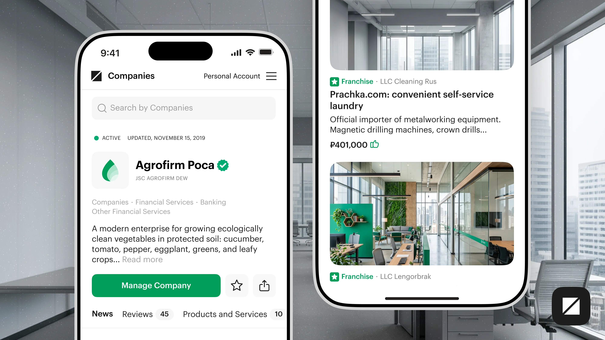
The company's public page
The profile is a business's storefront on RBC. Legal details, a description, products and services, reviews, trademarks, and a feed of the company's own publications. A company tells its story once, and from then on the page works for it in search and in the wider RBC feed
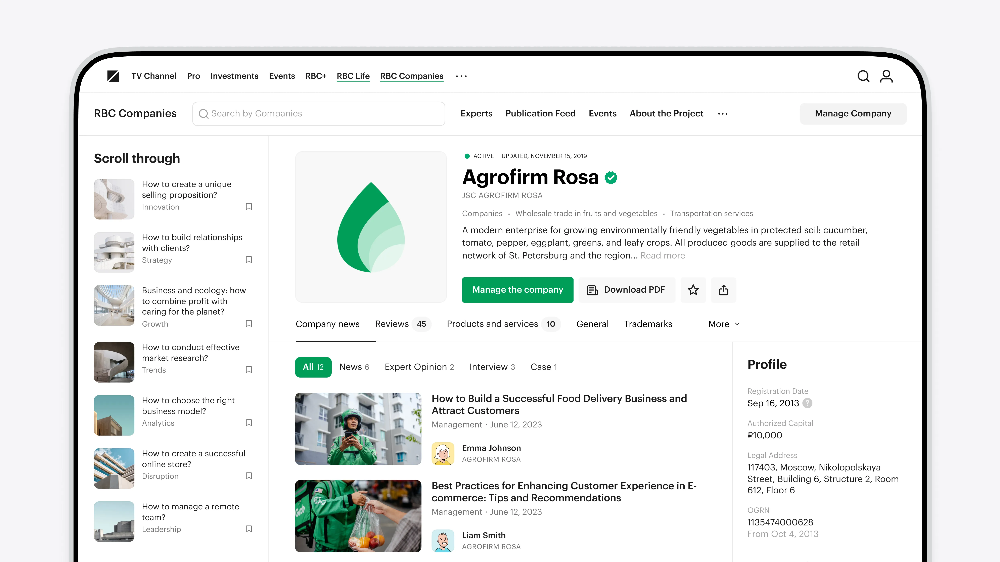
The same profile in the app
Everything was designed for desktop and the mobile app at once. On a narrow screen the profile collapses into a stack: a header with verification, the key action, then tabs for news, reviews, and services. Nothing from the desktop version got lost
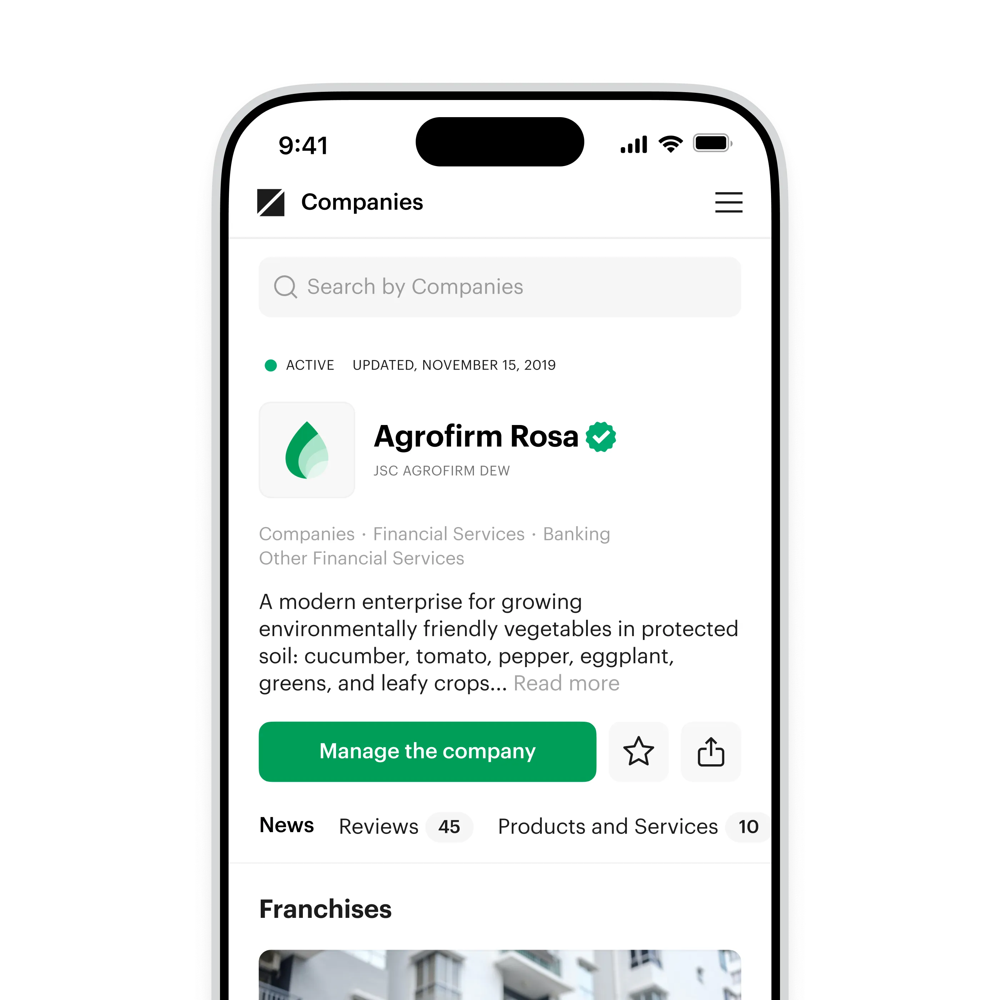
An author on every publication
Every piece is signed by an expert and the company they're attached to. Readers see who said it and what position the person holds, and the company gets a face instead of an anonymous press release
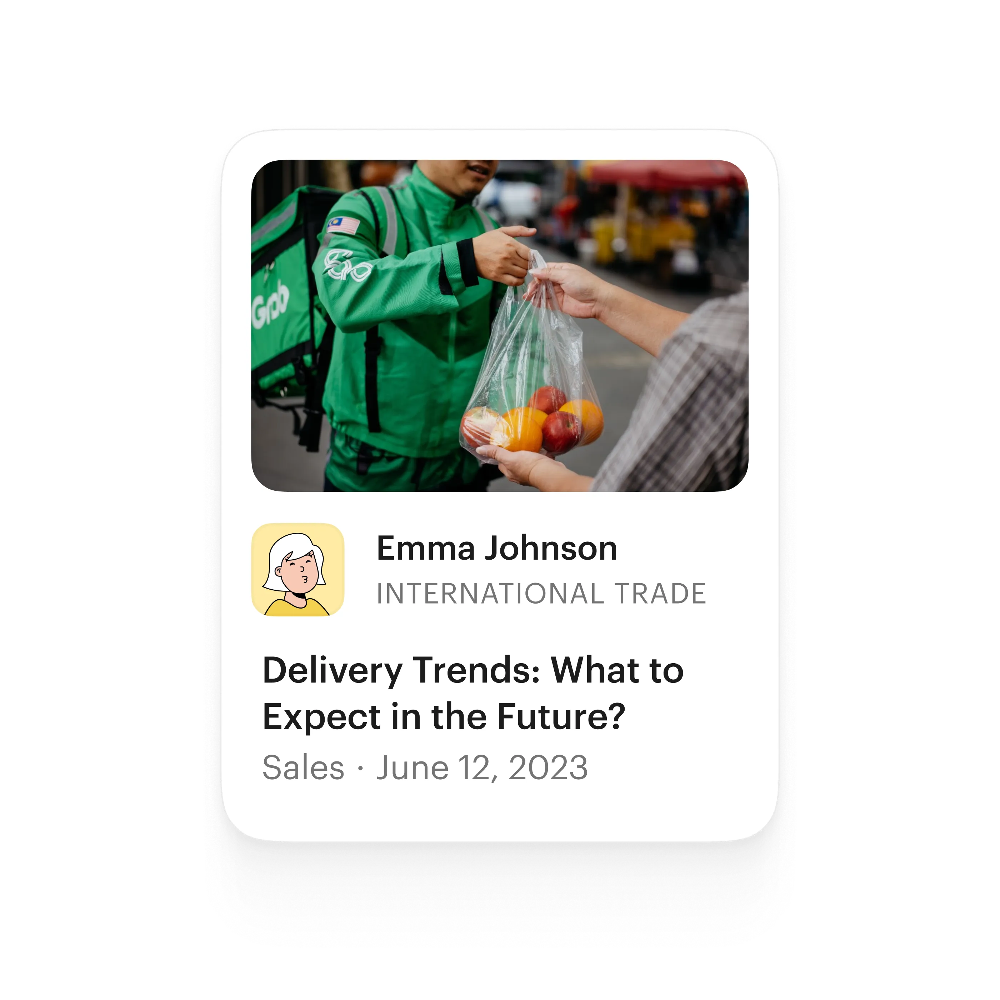
Expert profiles
Experts got pages of their own: title, company, bio, and all their publications in one place. A single company can have several, and each writes in their own name — columns, interviews, expert opinions. Alongside it there's always a short guide on how to become an expert and what that takes
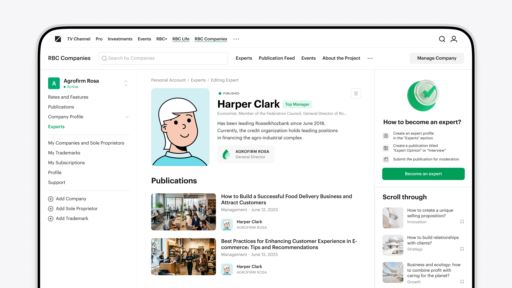
A feed of its own
Company publications don't dissolve into RBC's general stream — they have their own feed. I designed the grid, the cards, and the meta: author, company, section, date, content type. Interviews, expert opinions, and case studies each got their own shelf, so you can follow trends by type of content, not just by date
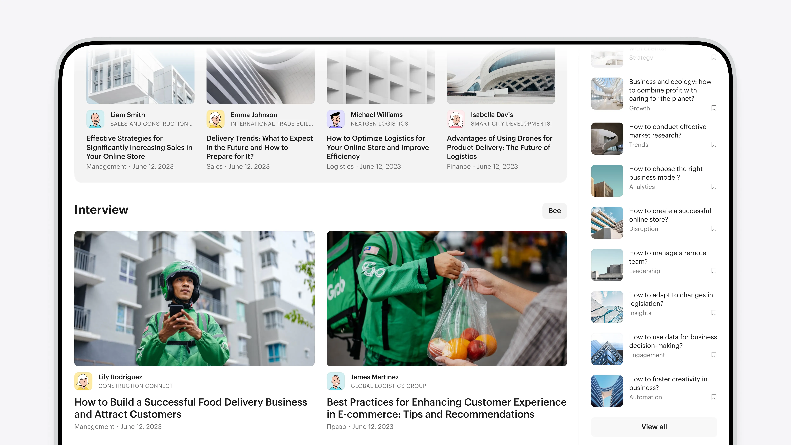
The events section
A separate section for events run by companies and their experts — from educational to industry-wide. Filters by city, category, and format, plus toggles for online and for past events. From a card you can sign up and attend, or watch the stream
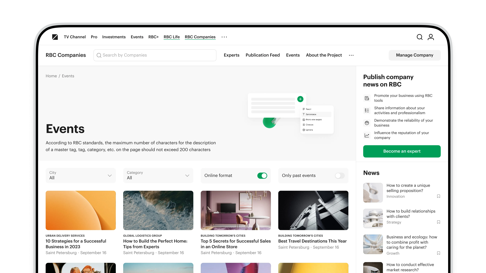
Events in the app
On mobile the filters collapse into a compact row and open as a sheet. The logic is the same as on desktop, but picking a city and a format works one-handed
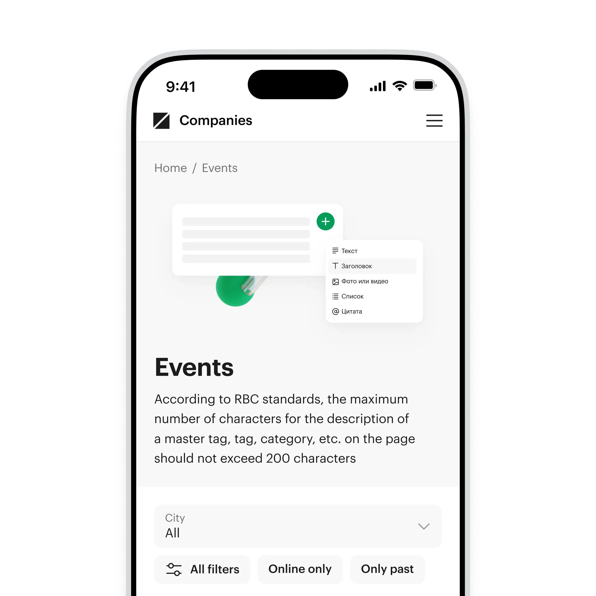
Publications in the account
The personal account is the company's workspace. This is where a piece is created, kept as a draft, and sent for moderation, with its review status visible right in the list. The tariff's news limit sits inside the flow, so the upgrade is offered where it's needed rather than in a separate section. Paid subscriptions grew by 1.5×
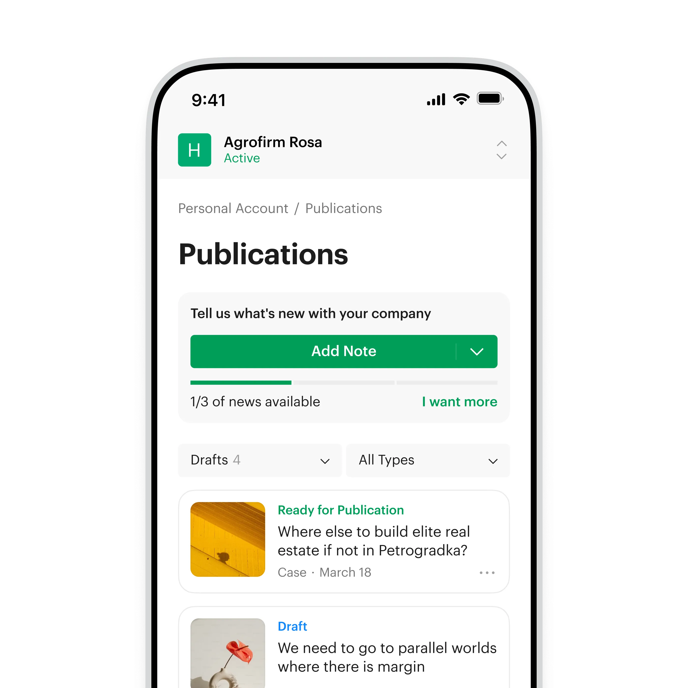
Tariffs and add-on services
The tariff sets how many news pieces a company gets and which formats it can add: publication on the RBC homepage, editor assistance, placement on the main news page. Each service has its own reach and price, and it all assembles like a kit before the piece is submitted. Within four months of launch, revenue for the stream grew by 380%
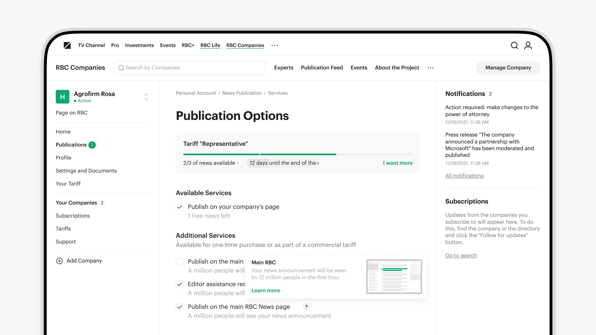
Creating and editing
I built forms for every object: company, sole proprietor, trademark, expert. A company adds its own experts, edits them, publishes interviews and opinions, and takes them down. All of it without contacting support and without manual work on our side
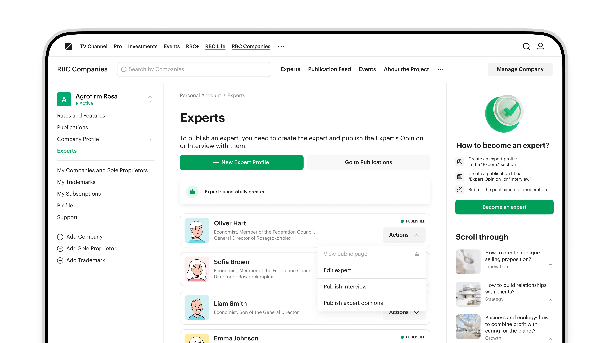
Components in the design system
I assembled the product's UI kit and contributed article templates, profile elements, ad formats, and branded sections to the design system. Components and tokens support light and dark themes at the same time. Mock-up production across this product and neighbouring ones got 3× faster
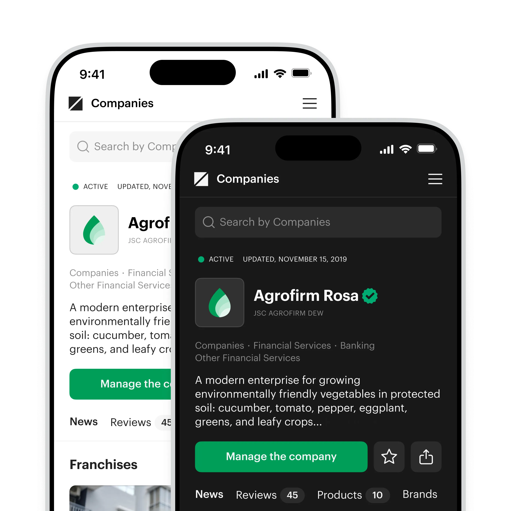
Tested with real people
Together with the team we ran both quantitative and qualitative research: large-sample surveys and sessions in the UX lab. Some hypotheses held up, others we disproved and reworked the flows — the order of steps when creating an expert, for instance, and how tariffs are presented. What shipped was a version validated with people, not just signed off internally
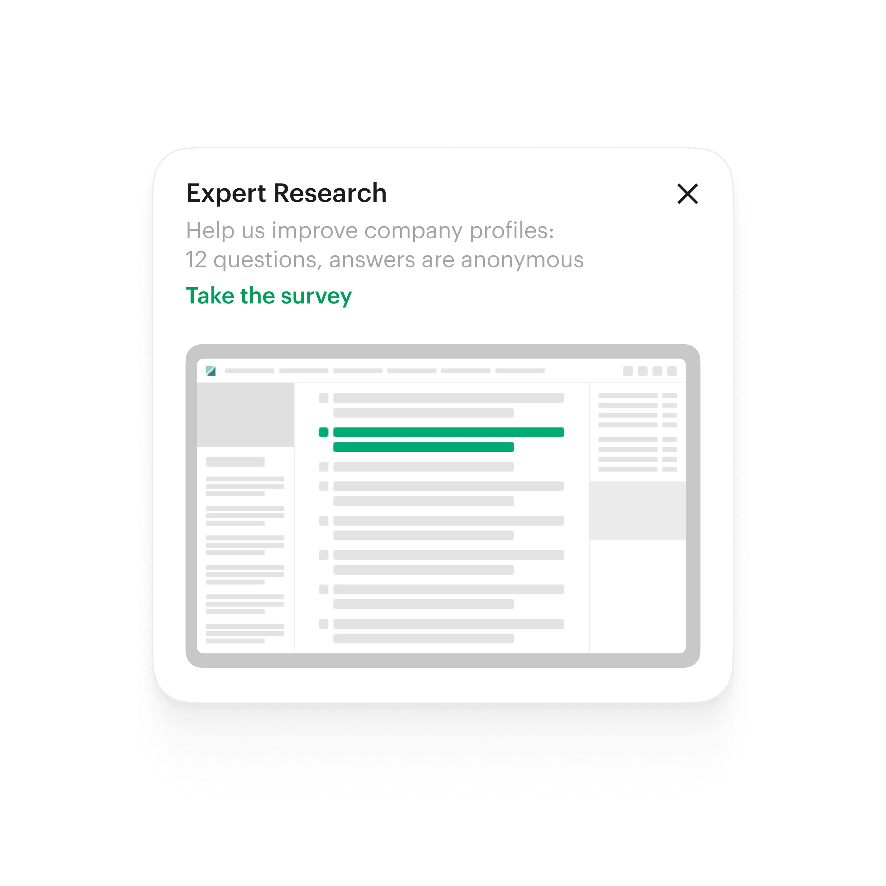